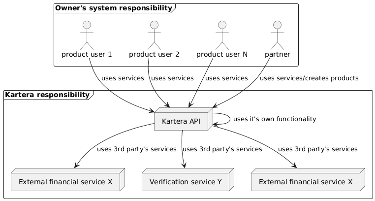

Architecture
The general architecture of the service is straightforward—the service provides a simplified interface between other financial services at the same time providing a lot of other functionality not available in them (like rewards, webhook notification, verification, etc.).
In general schema of communication can be presented like this:

- The owner of aa business (or someone on his behalf) performs the initial onboarding
in the system. A
Partnerandproductare created automatically after verification. - After validation, he registers its users in the system as
product users Product usersandpartner(orpartner users) perform all required operations in the system with the help of Kartera UI (available forpartnersonly, with login-based authentication) () or Kartera API (available forpartnersandproduct users, with Api-Key-based authentication). NOTE: the key aspect here is that all requests ofproduct-usersare proxied through owner's system, with his UI accepting their requests and redirecting to Kartera API- Kartera API performs some requests with help of own functionality some with help of external services (no one from Kartera API users should care about)